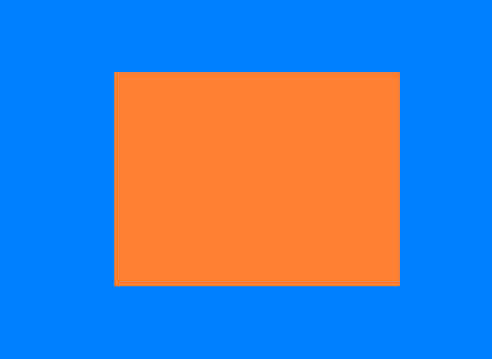

OpenGL-GLFW-GLAD
OpenGL自身是一个巨大的状态机
OpenGl的状态通常被称为上下文
GLFW解决操作系统层面的不同
-创建窗口
-定义上下文
-处理用户输入
GLAD使得代码可以用于不同的OpenGL驱动
-OpenGl本身只是标准/规范
-各个厂家具体实现方法可以不同
-不同操作系统处理方法也不同
GLFW
https://www.glfw.org/download.html
GLAD使用了一个web服务器，通过输入想要为使用的OpenGL版本和相关信息转到GLAD服务器网站（https://glad.dav1d.de）
glfwWindowHint(target, Hint);
把某一种target设置成hint
片段：包含渲染单个像素所需的所有数据。
显卡上有数千个小型处理器（核），可以在渲染管线中快速处理数据。核在GPU上为管线的每一步运行小程序。这些小程序成为着色器。
渲染管线 每一步执行完 后再执行下一步。
顶点着色器处理后，顶点值应该是NDC坐标；NDC坐标使用glViewport提供的数据，通过视口转换变为屏幕坐标。生成的屏幕空间左边将转换为片段，作为片段着色器的输入。
标准化设备坐标（Normalized Device Coordinates，NDC）
顶点着色器中处理过后，就应该是标准化设备坐标了，x、y和z的值在-1.0到1.0的一小段空间（立方体）。落在范围外的坐标都会被裁剪。
VAO、VBO
顶点输入
在GPU上创建内存，储存的顶点数据
- 通过顶点缓冲对象（Vertex Buffer Objecits，VBO）管理
- 顶点缓冲对象的缓冲类型是GL_ARRAY_BUFFER
配置OpenGL如何解释这些内存
- 通过顶点数组对象（Vertex Array Objects，VAO）管理
使用缓冲区对象的优点是，可以一次将大量数据发送到显卡，不必一次发送一个数据。
用着色器语言GLSL（OpenGL Shading Language）编写顶点着色器，然后进行编译。
添加着色器

对着色器进行编译
为了让OpenGL使用着色器，必须在运行时从源码中动态编译着色器。首先创建着色器对象。
各个阶段的着色器需要通过着色器程序对象链接起来。着色器程序对象是多个着色器组成的最终链接版本。
1 | const char *vertexShaderSource = |
1 | const char *fragmentShaderSource = |
将着色器链接到程序时，会将每个着色器的输出连接到下一个着色器的输入.如果输出和输入不匹配，会出现链接错误。
1 | //创建和编译着色器程序 |
创建着色器程序
元素缓冲对象EBO
EBO:Element Buffer Object
绘制两个三角形来组成一个矩形，可以使用下面的顶点的集合
1 | float vertices[] = |
通过下面修改顶点数进行绘制
1 | glDrawArrays(GL_TRIANGLES, 0, 6); |
可以获得以下图像
修改光栅化模式，改为GL_LINE后
1 | glPolygonMode(GL_FRONT_AND_BACK, GL_LINE); |
在这种情况下，有两个左上的点，两个右下的点，其中有两个点是多余的。
换一种方式，用索引的方式，使用四个点的坐标
1 | float vertices[] = { |
选择使用索引渲染的函数，这样就可以绘出和上图一样的图像
1 | glDrawElements(GL_TRIANGLES, 6, GL_UNSIGNED_INT, indices); //选择索引的方式 |
PS:采用了EBO时，则需要用glDrawElements函数来代替glDrawArrays函数，来指明我们从索引缓冲渲染。
参照glDrawArrays 和 glDrawElements
这样写还不是整个的流程，还需要配置EBO
1 | unsigned int EBO; |
修改参数
1 | glDrawElements(GL_TRIANGLES, 6, GL_UNSIGNED_INT, 0/*indices*/); |
然后使用绑定，之后注销
视口
调整窗口的时候，也应该同时调整视口。在窗口上注册一个回调函数，每次调用窗口大小时都调用该函数
1 | void frameBuffer_size_callback(GLFWwindow* window, int width, int height) |
注册回调函数
1 | //注册回调函数 |
PS：OpenGL中使用的坐标介于-1和1之间和屏幕空间坐标不同。例如：如果屏幕右下角为（800，600），（-0.5，0.5）将映射到屏幕空间的（200，450）
练习
- 通过添加更多的顶点数据，使用glDrawArrays绘制两个挨在一起的三角形
- 创建相同的两个三角形，但对它们的数据使用不同的VAO和VBO
- 创建两个着色器，其中一个使用片段做着色器输出黄色
着色器Shader
着色器是基于GPU的小程序，这些小程序针对渲染管线中的每个特定步骤运行。从本质上说，着色器只不过是将输入转换为输出的程序。着色器也是非常孤立的程序，他们之间唯一的交流是通过输入和输出。
GLSL：OpenGL SHading Language
PS:Shader Language目前主要有3种语言：
- 基于 OpenGL 的 OpenGL Shading Language，简称 GLSL;
- 基于 DirectX 的 High Level Shading Language,简称 HLSL;
- 还有 NVIDIA 公司的 C for Graphic，简称 Cg 语言。
这是GLSL程序的典型结构

类型
GLSL中包含C等其它语言大部分的默认基础数据类型
- int、float、double、uint和bool
GLSL也有两种容器类型
- 向量(Vector)
- vecn: the default vector of n floats
- bvecn: a vector of n booleans
- ivecn: a vector of n integers
- uvecn: a vector of n unsigned integers
- dvecn: a vector of n double components
- 矩阵(Matrix)
向量的分量可以通过xyzw分别访问。GLSL还允许对颜色使用rgba，或对纹理坐标使用stpq。
向量允许一些有趣而灵活的分量选择方式，叫做重组(Swizzling):
1 | vec2 vect = vec2(0.5,0.7); |
顶点着色器接受的是一种特殊形式的输入，否则就会效率低下
从顶点数据中直接接受输出。为了顶点数据该如何管理，使用location这一元数据（metadata）指定输入变量，这样才可以在CPU端配置顶点属性。例如：layout (location = 0)。layout这个的标识，使得能把它链接到顶点数据。
可以忽略layout(location = 0)标识符，通过在OpenGL代码中使用glGenAttribLocation查询属性位置值(Location)，通过glBindAttribLocation绑定属性位置值(Location)。但是推荐在着色器中设置它们，这样会更容易理解和节省工作量。
输入输出：
- 在发生方着色器中声明一个输出
- 在接受方着色器中声明一个类似的输入
- 当类型和名字都一致，OpenGL将把变量连接到一起（在链接程序对象时完成）
Uniform:
另一种从CPU的应用，向GPU中的着色器发送数据的方式
uniform是全局的(Global)，可以被任意着色器程序在任意阶段访问

如果声明了一个uniform却没用过，编译器会默认移除这个变量，导致最后编译出的版本并不会包含它，这可能导致一些非常麻烦的错误，切记！
不去给像素传递一个单一的颜色，而是让它随着时间改变颜色
设置着色器，使用uniform
1 | const char *vertexShaderSource = |
最后通过sin和cos实现颜色渐变
1 | glUseProgram(shaderProgram); |
给顶点不同的颜色：
1 | float vertices[] = // 位置 // 颜色 |
1 | glBufferData(GL_ARRAY_BUFFER, sizeof(vertices), vertices, GL_STATIC_DRAW); |

编写自己的着色器类
把着色器类全部放在在头文件里，主要是为了学习用途，当然也方便移植。添加必要的include，并定义类结构：
1 |
|
下一步，我们需要编译和链接着色器。
1 | // 2. 编译着色器 |
设置use函数
1 | void use() |
1 | // 一些有用Uniform函数 |
最后创建着色器对象，再使用
着色器练习
修改顶点着色器让三角形上下颠倒：
1
2
3
4
5
6
7
8
9
10
11
layout (location = 0) in vec3 aPos;
layout (location = 1) in vec3 aColor;
out vec3 ourColor;
//修改顶点着色器，让aPos.y变成负值
void main()
{
gl_Position = vec4(aPos.x,- aPos.y,aPos.z, 1.0);
ourColor = aColor;
}使用uniform定义一个水平偏移量，在顶点着色器中使用这个偏移量把三角形移动到屏幕右侧：
- 在C++代码设置
1
2float offset = 0.5f;
ourShader.setFloat("xOffset", offset); 在顶点着色器
1
2
3
4
5
6
7
8
9
10
11
12
13
layout (location = 0) in vec3 aPos;
layout (location = 1) in vec3 aColor;
out vec3 ourColor;
uniform float xOffset;
void main()
{
gl_Position = vec4(aPos.x + xOffset, aPos.y, aPos.z, 1.0); // add the xOffset to the x position of the vertex position
ourColor = aColor;
}
使用
out关键字把顶点位置输出到片段着色器，并将片段的颜色设置为与顶点位置相等（来看看连顶点位置值都在三角形中被插值的结果）。做完这些后，尝试回答下面的问题：为什么在三角形的左下角是黑的?：
1 | //顶点 |
1 | //片元 |
回答：因为左下角的顶点的坐标为(-0.5f,-0.5f,0.0f),在作为颜色显示的时候负值被固定为0，而(0,0,0,1)就是黑色，而这一直发生那个顶点插值到其他顶点的过程，所以导致了左下角为黑边。
纹理
纹理是一个2D图片(其实也有1D和3D的纹理)，它可以用来添加物体的细节。
纹理也可以用来存储大量数据。
纹理坐标
纹理坐标(Texture Coordinate)：每一个顶点会关联一个纹理坐标，用来标明该从纹理图像的哪个部分采样。之后再图形的其它片段进行片段插值(Fragment Interpolation)。
纹理坐标也是在x和y轴，分别范围也为[0,1]；
采样(Sampling)：使用纹理坐标获取纹理颜色。
纹理环绕方式(Texture Wrapping)
纹理坐标的范围通常是从(0,0)到(1,1)，当外面设置的纹理坐标超出了范围，OpenGL的行为是重复这个纹理图像，也提供了一下可以选择的方式
| 环绕方式 | 描述 |
|---|---|
| GL_REPEAT | 对纹理的默认行为。重复纹理图像。 |
| GL_MIRRORED_REPEAT | 和GL_REPEAT一样，但每次重复图片是镜像放置的。 |
| GL_CLAMP_TO_EDGE | 纹理坐标会被约束在0到1之间，超出的部分会重复纹理坐标的边缘，产生一种边缘被拉伸的效果。 |
| GL_CLAMP_TO_BORDER | 超出的坐标为用户指定的边缘颜色。 |
通过使用glTexParameter*函数，可以使用上面提及的每一个选项来对单独的坐标系(s、t、r(如果使用3D纹理的话))，它们和x、y、z等价
1 | glTexParameteri(GL_TEXTURE_2D, GL_TEXTURE_WRAP_S, GL_MIRRORED_REPEAT); |
第一个参数指定纹理目标，这里使用2D纹理，所以这里使用GL_TEXTURE_2D。第二个参数要求我们提供我们需要设置的纹理坐标系，这里我们选择S轴和T轴，最后一个参数指定纹理环绕方式。
如果选择了GL_CLAMP_TO_BORDERGL_CLAMP_TO_BORDER的选项，我们还需要选择外围的颜色。这里需要使用glTexParameter函数带fv后置的形式来设置当超出边界后外围的颜色。
1 | float borderColor[] = { 1.0f, 1.0f, 0.0f, 1.0f }; |
纹理过滤(Texture Filtering)
纹理坐标不依赖分辨率，它可以是任意浮点值，所以OpenGl需要知道怎么样将纹理像素(Texture Pixel,也叫Texel)映射到纹理坐标，当有一个很大的物体但是纹理的分辨率很低的时候这就变得很重要了。所以OpenGL也有对于纹理过滤(Texture Filtering)的选项，纹理过滤有很多选项，这里只讨论最重要的两种：GL_NEARET和GL_LINEAR.
Texture Pixel也叫Texel，你可以想象你打开一张
.jpg格式图片，不断放大你会发现它是由无数像素点组成的，这个点就是纹理像素；注意不要和纹理坐标搞混，纹理坐标是你给模型顶点设置的那个数组，OpenGL以这个顶点的纹理坐标数据去查找纹理图像上的像素，然后进行采样提取纹理像素的颜色。
GL_NEAREST（也叫邻近过滤，Nearest Neighbor Filtering）是OpenGL默认的纹理过滤方式。当设置为GL_NEAREST的时候，OpenGL会选择中心点最接近纹理坐标的那个像素。下图中你可以看到四个像素，加号代表纹理坐标。左上角那个纹理像素的中心距离纹理坐标最近，所以它会被选择为样本颜色：

GL_LINEAR（也叫线性过滤，(Bi)linear Filtering）它会基于纹理坐标附近的纹理像素，计算出一个插值，近似出这些纹理像素之间的颜色。一个纹理像素的中心距离纹理坐标越近，那么这个纹理像素的颜色对最终的样本颜色的贡献越大。下图中你可以看到返回的颜色是邻近像素的混合色：

这两种纹理过滤方式的视觉效果，用一个很大的物体上应用一张低分辨率纹理，（纹理被放大了，每个纹理像素都能看到）：

多级渐远纹理
OpenGL使用一种叫做多级渐远纹理(Mipmap)的概念来解决这个问题，它简单来说就是一系列的纹理图像，后一个纹理图像是前一个的二分之一。多级渐远纹理背后的理念很简单：距观察者的距离超过一定的阈值，OpenGL会使用不同的多级渐远纹理，即最适合物体的距离的那个。由于距离远，解析度不高也不会被用户注意到。同时，多级渐远纹理另一加分之处是它的性能非常好。让我们看一下多级渐远纹理是什么样子的：

OpenGL有一个glGenerateMipmaps函数，可以在创建完一个纹理后调用 OpenGL就会自动接着干这些事。
在渲染过程中切换多级渐远纹理级别时，OpenGL在两个不同级别的多级渐远纹理层之间会产生不真实的生硬边界。像普通的纹理过滤，不同的纹理级别切换也可以使用NEAREST和LINEAR过滤。
| 过滤方式 | 描述 |
|---|---|
| GL_NEAREST_MIPMAP_NEAREST | 使用最邻近的多级渐远纹理来匹配像素大小，并使用邻近插值进行纹理采样 |
| GL_LINEAR_MIPMAP_NEAREST | 使用最邻近的多级渐远纹理级别，并使用线性插值进行采样 |
| GL_NEAREST_MIPMAP_LINEAR | 在两个最匹配像素大小的多级渐远纹理之间进行线性插值，使用邻近插值进行采样 |
| GL_LINEAR_MIPMAP_LINEAR | 在两个邻近的多级渐远纹理之间使用线性插值，并使用线性插值进行采样 |
就像纹理过滤一样，我们可以使用glTexParameteri将过滤方式设置为前面四种提到的方法之一：
1 | glTexParameteri(GL_TEXTURE_2D, GL_TEXTURE_MIN_FILTER, GL_LINEAR_MIPMAP_LINEAR); |
加载与创建纹理
纹理单元
你可能会奇怪为什么sampler2D变量是个uniform，我们却不用glUniform给它赋值。使用glUniform1i，我们可以给纹理采样器分配一个位置值，这样的话我们能够在一个片段着色器中设置多个纹理。一个纹理的位置值通常称为一个纹理单元(Texture Unit)。一个纹理的默认纹理单元是0，它是默认的激活纹理单元
纹理单元的主要目的是让我们在着色器中可以使用多于一个的纹理。通过把纹理单元赋值给采样器，我们可以一次绑定多个纹理，只要我们首先激活对应的纹理单元。就像glBindTexture一样，我们可以使用glActiveTexture激活纹理单元，传入我们需要使用的纹理单元：
1 | glActiveTexture(GL_TEXTURE0); // 在绑定纹理之前先激活纹理单元 |
激活纹理单元之后，接下来的glBindTexture函数调用会绑定这个纹理到当前激活的纹理单元，纹理单元GL_TEXTURE0默认总是被激活，所以我们在前面的例子里当我们使用glBindTexture的时候，无需激活任何纹理单元。
OpenGL至少保证有16个纹理单元供你使用，也就是说你可以激活从GL_TEXTURE0到GL_TEXTRUE15。它们都是按顺序定义的，所以我们也可以通过GL_TEXTURE0 + 8的方式获得GL_TEXTURE8，这在当我们需要循环一些纹理单元的时候会很有用。
练习
- 修改片段着色器，仅让笑脸图案朝另一个方向看，参考解答
1 |
|
尝试用不同的纹理环绕方式，设定一个从
0.0f到2.0f范围内的（而不是原来的0.0f到1.0f）纹理坐标。试试看能不能在箱子的角落放置4个笑脸：参考解答，结果。记得一定要试试其它的环绕方式。- 修改纹理坐标
1
2
3
4
5
6
7float vertices[] = {
// ---- 位置 ---- ---- 颜色 ---- - 纹理坐标 -
0.5f, 0.5f, 0.0f, 1.0f, 0.0f, 0.0f, 2.0f, 2.0f, // 右上
0.5f, -0.5f, 0.0f, 0.0f, 1.0f, 0.0f, 2.0f, 0.0f, // 右下
-0.5f, -0.5f, 0.0f, 0.0f, 0.0f, 1.0f, 0.0f, 0.0f, // 左下
-0.5f, 0.5f, 0.0f, 1.0f, 1.0f, 0.0f, 0.0f, 2.0f // 左上
};- 修改第一个纹理的环绕方式
1
2glTexParameteri(GL_TEXTURE_2D, GL_TEXTURE_WRAP_S, GL_CLAMP_TO_EDGE);
glTexParameteri(GL_TEXTURE_2D, GL_TEXTURE_WRAP_T, GL_CLAMP_TO_EDGE);修改第二个纹理的环绕方式
1
2glTexParameteri(GL_TEXTURE_2D, GL_TEXTURE_WRAP_S, GL_MIRRORED_REPEAT);
glTexParameteri(GL_TEXTURE_2D, GL_TEXTURE_WRAP_T, GL_REPEAT);结果

尝试在矩形上只显示纹理图像的中间一部分，修改纹理坐标，达到能看见单个的像素的效果。尝试使用GL_NEAREST的纹理过滤方式让像素显示得更清晰：参考解答
- 修改纹理坐标
1
2
3
4
5
6
7float vertices[] = {
// ---- 位置 ---- ---- 颜色 ---- - 纹理坐标 -
0.5f, 0.5f, 0.0f, 1.0f, 0.0f, 0.0f, 0.55f, 0.55f, // 右上
0.5f, -0.5f, 0.0f, 0.0f, 1.0f, 0.0f, 0.55f, 0.45f, // 右下
-0.5f, -0.5f, 0.0f, 0.0f, 0.0f, 1.0f, 0.45f, 0.45f, // 左下
-0.5f, 0.5f, 0.0f, 1.0f, 1.0f, 0.0f, 0.45f, 0.55f // 左上
};- 修改过滤方式
1
2glTexParameteri(GL_TEXTURE_2D, GL_TEXTURE_MIN_FILTER, GL_NEAREST);
glTexParameteri(GL_TEXTURE_2D, GL_TEXTURE_MAG_FILTER, GL_NEAREST);- 结果(第一种为GL_LINEAR，第二个为GL_NEAREST)


使用一个uniform变量作为mix函数的第三个参数来改变两个纹理可见度，使用上和下键来改变箱子或笑脸的可见度：参考解答。
- 修改片段着色器
1
2
3
4
5
6
7
8
9
10
11
12
13
14
out vec4 FragColor;
in vec3 ourColor;
in vec2 TexCoord;
uniform sampler2D texture1;
uniform sampler2D texture2;
uniform float parm;
void main()
{
FragColor = mix(texture(texture1, TexCoord), texture(texture2, vec2(1.0-TexCoord.x,TexCoord.y)), parm);
}- 设置uniform和按键
1 | float parm = 0.2f; |

变换
向量的点乘和叉乘
点乘(Dot Product)
两个向量的点乘等于它们的数乘结果乘以两个向量之间夹角的余弦值。可能听起来有点费解，我们来看一下公式：
$$
\bar{v}⋅\bar{k}=||\bar{v}||⋅||\bar{k}||⋅cosθ
$$
它们之间的夹角记作$$θ$$。为什么这很有用？想象如果$\bar{v}$和$\bar{k}$都是单位向量，它们的长度会等于1。这样公式会有效简化成：
$$
\bar{v}⋅\bar{k}=1⋅1⋅cosθ=cosθ
$$
你也可以通过点乘的结果计算两个非单位向量的夹角，点乘的结果除以两个向量的长度之积，得到的结果就是夹角的余弦值，即cosθ。
$$
\cos \theta = \frac{\bar{v} \cdot \bar{k}}{||\bar{v}|| \cdot ||\bar{k}||}
$$
点乘是通过将对应分量逐个相乘，然后再把所得积相加来计算的。两个单位向量的（你可以验证它们的长度都为1）点乘会像是这样：
$$
\begin{pmatrix} \color{red}{0.6} \\ -\color{green}{0.8} \\ \color{blue}0 \end{pmatrix} \cdot \begin{pmatrix} \color{red}0 \\ \color{green}1 \\ \color{blue}0 \end{pmatrix} = (\color{red}{0.6} * \color{red}0) + (-\color{green}{0.8} * \color{green}1) + (\color{blue}0 * \color{blue}0) = -0.8
$$
2.叉乘(Cross Product)
叉乘只在3D空间中有定义，它需要两个不平行向量作为输入，生成一个正交于两个输入向量的第三个向量。如果输入的两个向量也是正交的，那么叉乘之后将会产生3个互相正交的向量。接下来的教程中这会非常有用。下面的图片展示了3D空间中叉乘的样子：

两个正交向量A和B叉积：
$$
\begin{pmatrix} \color{red}{A_{x}} \\ \color{green}{A_{y}} \\ \color{blue}{A_{z}} \end{pmatrix} \times \begin{pmatrix} \color{red}{B_{x}} \\ \color{green}{B_{y}} \\ \color{blue}{B_{z}} \end{pmatrix} = \begin{pmatrix} \color{green}{A_{y}} \cdot \color{blue}{B_{z}} - \color{blue}{A_{z}} \cdot \color{green}{B_{y}} \\ \color{blue}{A_{z}} \cdot \color{red}{B_{x}} - \color{red}{A_{x}} \cdot \color{blue}{B_{z}} \\ \color{red}{A_{x}} \cdot \color{green}{B_{y}} - \color{green}{A_{y}} \cdot \color{red}{B_{x}} \end{pmatrix}
$$
矩阵
向量，它其实就是一个N×1矩阵，N表示向量分量的个数（也叫N维(N-dimensional)向量）
单位矩阵
在OpenGL中，由于某些原因我们通常使用4×4的变换矩阵，而其中最重要的原因就是大部分的向量都是4分量的。我们能想到的最简单的变换矩阵就是单位矩阵(Identity Matrix)。单位矩阵是一个除了对角线以外都是0的N×N矩阵。在下式中可以看到，这种变换矩阵使一个向量完全不变：
$$
\begin{bmatrix} \color{red}1 & \color{red}0 & \color{red}0 & \color{red}0 \\ \color{green}0 & \color{green}1 & \color{green}0 & \color{green}0 \\ \color{blue}0 & \color{blue}0 & \color{blue}1 & \color{blue}0 \\ \color{purple}0 & \color{purple}0 & \color{purple}0 & \color{purple}1 \end{bmatrix} \cdot \begin{bmatrix} 1 \\ 2 \\ 3 \\ 4 \end{bmatrix} = \begin{bmatrix} \color{red}1 \cdot 1 \\ \color{green}1 \cdot 2 \\ \color{blue}1 \cdot 3 \\ \color{purple}1 \cdot 4 \end{bmatrix} = \begin{bmatrix} 1 \\ 2 \\ 3 \\ 4 \end{bmatrix}
$$
向量看起来完全没变。从乘法法则来看就很容易理解来：第一个结果元素是矩阵的第一行的每个元素乘以向量的每个对应元素。因为每行的元素除了第一个都是0，可得：$$\color{red}1\cdot1 + \color{red}0\cdot2 + \color{red}0\cdot3 + \color{red}0\cdot4 = 1$$，向量的其他3个元素同理。
单位矩阵通常是生成其他变换矩阵的起点。
缩放矩阵
对一个向量进行缩放(Scaling)就是对向量的长度进行缩放，而保持它的方向不变。由于我们进行的是2维或3维操作，我们可以分别定义一个有2或3个缩放变量的向量，每个变量缩放一个轴(x、y或z)。
记住，OpenGL通常是在3D空间进行操作的，对于2D的情况我们可以把z轴缩放1倍，这样z轴的值就不变了。我们刚刚的缩放操作是不均匀(Non-uniform)缩放，因为每个轴的缩放因子(Scaling Factor)都不一样。如果每个轴的缩放因子都一样那么就叫均匀缩放(Uniform Scale)。
$$
\begin{bmatrix} \color{red}{S_1} & \color{red}0 & \color{red}0 & \color{red}0 \\ \color{green}0 & \color{green}{S_2} & \color{green}0 & \color{green}0 \\ \color{blue}0 & \color{blue}0 & \color{blue}{S_3} & \color{blue}0 \\ \color{purple}0 & \color{purple}0 & \color{purple}0 & \color{purple}1 \end{bmatrix} \cdot \begin{pmatrix} x \\ y \\ z \\ 1 \end{pmatrix} = \begin{pmatrix} \color{red}{S_1} \cdot x \\ \color{green}{S_2} \cdot y \\ \color{blue}{S_3} \cdot z \\ 1 \end{pmatrix}
$$
记住，OpenGL通常是在3D空间进行操作的，对于2D的情况我们可以把z轴缩放1倍，这样z轴的值就不变了。我们刚刚的缩放操作是不均匀(Non-uniform)缩放，因为每个轴的缩放因子(Scaling Factor)都不一样。如果每个轴的缩放因子都一样那么就叫均匀缩放(Uniform Scale)。
位移矩阵
位移(Translation)是在原始向量的基础上加上另一个向量从而获得一个在不同位置的新向量的过程，从而在位移向量基础上移动了原始向量。我们已经讨论了向量加法，所以这应该不会太陌生。
和缩放矩阵一样，在4×4矩阵上有几个特别的位置用来执行特定的操作，对于位移来说它们是第四列最上面的3个值。如果我们把位移向量表示为$$(\color{red}{T_x},\color{green}{T_y},\color{blue}{T_z})$$，我们就能把位移矩阵定义为：
$$
\begin{bmatrix} \color{red}1 & \color{red}0 & \color{red}0 & \color{red}{T_x} \\ \color{green}0 & \color{green}1 & \color{green}0 & \color{green}{T_y} \\ \color{blue}0 & \color{blue}0 & \color{blue}1 & \color{blue}{T_z} \\ \color{purple}0 & \color{purple}0 & \color{purple}0 & \color{purple}1 \end{bmatrix} \cdot \begin{pmatrix} x \\ y \\ z \\ 1 \end{pmatrix} = \begin{pmatrix} x + \color{red}{T_x} \\ y + \color{green}{T_y} \\ z + \color{blue}{T_z} \\ 1 \end{pmatrix}
$$
这样是能工作的，因为所有的位移值都要乘以向量的w行，所以位移值会加到向量的原始值上（想想矩阵乘法法则）。而如果你用3x3矩阵我们的位移值就没地方放也没地方乘了，所以是不行的。
齐次坐标(Homogeneous Coordinates)
向量的w分量也叫齐次坐标。想要从齐次向量得到3D向量，我们可以把x、y和z坐标分别除以w坐标。我们通常不会注意这个问题，因为w分量通常是1.0。使用齐次坐标有几点好处：它允许我们在3D向量上进行位移（如果没有w分量我们是不能位移向量的），而且下一章我们会用w值创建3D视觉效果。
如果一个向量的齐次坐标是0，这个坐标就是方向向量(Direction Vector)，因为w坐标是0，这个向量就不能位移
有了位移矩阵我们就可以在3个方向(x、y、z)上移动物体，它是我们的变换工具箱中非常有用的一个变换矩阵。
旋转矩阵
2D或3D空间中的旋转用角(Angle)来表示。角可以是角度制或弧度制的，周角是360角度或2 PI弧度。
大多数旋转函数需要用弧度制的角，但幸运的是角度制的角也可以很容易地转化为弧度制的：
- 弧度转角度：
角度 = 弧度 * (180.0f / PI)- 角度转弧度：
弧度 = 角度 * (PI / 180.0f)
PI约等于3.14159265359。
转半圈会旋转360/2 = 180度，向右旋转1/5圈表示向右旋转360/5 = 72度。下图中展示的2D向量$\bar{v}$是由$\bar{k}$向右旋转72度所得的：

在3D空间中旋转需要定义一个角和一个旋转轴(Rotation Axis)。物体会沿着给定的旋转轴旋转特定角度。如果你想要更形象化的感受，可以试试向下看着一个特定的旋转轴，同时将你的头部旋转一定角度。当2D向量在3D空间中旋转时，我们把旋转轴设为z轴（尝试想象这种情况）。
使用三角学，给定一个角度，可以把一个向量变换为一个经过旋转的新向量。这通常是使用一系列正弦和余弦函数（一般简称sin和cos）各种巧妙的组合得到的。当然，讨论如何生成变换矩阵超出了这个教程的范围。
旋转矩阵在3D空间中每个单位轴都有不同定义，旋转角度用$θ$表示：
沿x轴旋转：
$$
\begin{bmatrix} \color{red}1 & \color{red}0 & \color{red}0 & \color{red}0 \\ \color{green}0 & \color{green}{\cos \theta} & - \color{green}{\sin \theta} & \color{green}0 \\ \color{blue}0 & \color{blue}{\sin \theta} & \color{blue}{\cos \theta} & \color{blue}0 \\ \color{purple}0 & \color{purple}0 & \color{purple}0 & \color{purple}1 \end{bmatrix} \cdot \begin{pmatrix} x \\ y \\ z \\ 1 \end{pmatrix} = \begin{pmatrix} x \\ \color{green}{\cos \theta} \cdot y - \color{green}{\sin \theta} \cdot z \\ \color{blue}{\sin \theta} \cdot y + \color{blue}{\cos \theta} \cdot z \\ 1 \end{pmatrix}
$$
沿y轴旋转：
$$
\begin{bmatrix} \color{red}{\cos \theta} & \color{red}0 & \color{red}{\sin \theta} & \color{red}0 \\ \color{green}0 & \color{green}1 & \color{green}0 & \color{green}0 \\ - \color{blue}{\sin \theta} & \color{blue}0 & \color{blue}{\cos \theta} & \color{blue}0 \\ \color{purple}0 & \color{purple}0 & \color{purple}0 & \color{purple}1 \end{bmatrix} \cdot \begin{pmatrix} x \\ y \\ z \\ 1 \end{pmatrix} = \begin{pmatrix} \color{red}{\cos \theta} \cdot x + \color{red}{\sin \theta} \cdot z \\ y \\ - \color{blue}{\sin \theta} \cdot x + \color{blue}{\cos \theta} \cdot z \\ 1 \end{pmatrix}
$$
沿z轴旋转：
$$
\begin{bmatrix} \color{red}{\cos \theta} & - \color{red}{\sin \theta} & \color{red}0 & \color{red}0 \\ \color{green}{\sin \theta} & \color{green}{\cos \theta} & \color{green}0 & \color{green}0 \\ \color{blue}0 & \color{blue}0 & \color{blue}1 & \color{blue}0 \\ \color{purple}0 & \color{purple}0 & \color{purple}0 & \color{purple}1 \end{bmatrix} \cdot \begin{pmatrix} x \\ y \\ z \\ 1 \end{pmatrix} = \begin{pmatrix} \color{red}{\cos \theta} \cdot x - \color{red}{\sin \theta} \cdot y \\ \color{green}{\sin \theta} \cdot x + \color{green}{\cos \theta} \cdot y \\ z \\ 1 \end{pmatrix}
$$
利用旋转矩阵我们可以把任意位置向量沿一个单位旋转轴进行旋转。也可以将多个矩阵复合，比如先沿着x轴旋转再沿着y轴旋转。但是这会很快导致一个问题——万向节死锁（Gimbal Lock，可以看看这个视频（优酷）来了解）。在这里我们不会讨论它的细节，但是对于3D空间中的旋转，一个更好的模型是沿着任意的一个轴，比如单位向量$(0.662, 0.2, 0.7222)$旋转，而不是对一系列旋转矩阵进行复合。这样的一个（超级麻烦的）矩阵是存在的，见下面这个公式，其中$(\color{red}{R_x}, \color{green}{R_y}, \color{blue}{R_z})$代表任意旋转轴：
$$
\begin{bmatrix} \cos \theta + \color{red}{R_x}^2(1 - \cos \theta) & \color{red}{R_x}\color{green}{R_y}(1 - \cos \theta) - \color{blue}{R_z} \sin \theta & \color{red}{R_x}\color{blue}{R_z}(1 - \cos \theta) + \color{green}{R_y} \sin \theta & 0 \\ \color{green}{R_y}\color{red}{R_x} (1 - \cos \theta) + \color{blue}{R_z} \sin \theta & \cos \theta + \color{green}{R_y}^2(1 - \cos \theta) & \color{green}{R_y}\color{blue}{R_z}(1 - \cos \theta) - \color{red}{R_x} \sin \theta & 0 \\ \color{blue}{R_z}\color{red}{R_x}(1 - \cos \theta) - \color{green}{R_y} \sin \theta & \color{blue}{R_z}\color{green}{R_y}(1 - \cos \theta) + \color{red}{R_x} \sin \theta & \cos \theta + \color{blue}{R_z}^2(1 - \cos \theta) & 0 \\ 0 & 0 & 0 & 1 \end{bmatrix}
$$
在数学上讨论如何生成这样的矩阵仍然超出了本节内容。但是记住，即使这样一个矩阵也不能完全解决万向节死锁问题（尽管会极大地避免）。避免万向节死锁的真正解决方案是使用四元数(Quaternion)，它不仅更安全，而且计算会更有效率。四元数可能会在后面的教程中讨论。
矩阵的组合
使用矩阵进行变换的真正力量在于，根据矩阵之间的乘法，我们可以把多个变换组合到一个矩阵中。让我们看看我们是否能生成一个变换矩阵，让它组合多个变换。假设我们有一个顶点(x, y, z)，我们希望将其缩放2倍，然后位移(1, 2, 3)个单位。我们需要一个位移和缩放矩阵来完成这些变换。结果的变换矩阵看起来像这样：
$$
Trans . Scale = \begin{bmatrix} \color{red}1 & \color{red}0 & \color{red}0 & \color{red}1 \\ \color{green}0 & \color{green}1 & \color{green}0 & \color{green}2 \\ \color{blue}0 & \color{blue}0 & \color{blue}1 & \color{blue}3 \\ \color{purple}0 & \color{purple}0 & \color{purple}0 & \color{purple}1 \end{bmatrix} . \begin{bmatrix} \color{red}2 & \color{red}0 & \color{red}0 & \color{red}0 \\ \color{green}0 & \color{green}2 & \color{green}0 & \color{green}0 \\ \color{blue}0 & \color{blue}0 & \color{blue}2 & \color{blue}0 \\ \color{purple}0 & \color{purple}0 & \color{purple}0 & \color{purple}1 \end{bmatrix} = \begin{bmatrix} \color{red}2 & \color{red}0 & \color{red}0 & \color{red}1 \\ \color{green}0 & \color{green}2 & \color{green}0 & \color{green}2 \\ \color{blue}0 & \color{blue}0 & \color{blue}2 & \color{blue}3 \\ \color{purple}0 & \color{purple}0 & \color{purple}0 & \color{purple}1 \end{bmatrix}
$$
注意，当矩阵相乘时我们先写位移再写缩放变换的。矩阵乘法是不遵守交换律的，这意味着它们的顺序很重要。当矩阵相乘时，在最右边的矩阵是第一个与向量相乘的，所以你应该从右向左读这个乘法。建议您在组合矩阵时，先进行缩放操作，然后是旋转，最后才是位移，否则它们会（消极地）互相影响。比如，如果你先位移再缩放，位移的向量也会同样被缩放（译注：比如向某方向移动2米，2米也许会被缩放成1米）！
用最终的变换矩阵左乘我们的向量会得到以下结果：
$$
\begin{bmatrix} \color{red}2 & \color{red}0 & \color{red}0 & \color{red}1 \\ \color{green}0 & \color{green}2 & \color{green}0 & \color{green}2 \\ \color{blue}0 & \color{blue}0 & \color{blue}2 & \color{blue}3 \\ \color{purple}0 & \color{purple}0 & \color{purple}0 & \color{purple}1 \end{bmatrix} . \begin{bmatrix} x \\ y \\ z \\ 1 \end{bmatrix} = \begin{bmatrix} \color{red}2x + \color{red}1 \\ \color{green}2y + \color{green}2 \\ \color{blue}2z + \color{blue}3 \\ 1 \end{bmatrix}
$$
向量先缩放2倍，然后位移了(1, 2, 3)个单位。
实践
GLM是OpenGL Mathematics的缩写，它是一个只有头文件的库，也就是说我们只需包含对应的头文件就行了，不用链接和编译。GLM可以在它们的网站上下载。把头文件的根目录复制到你的includes文件夹，然后你就可以使用这个库了。
GLM库从0.9.9版本起，默认会将矩阵类型初始化为一个零矩阵（所有元素均为0），而不是单位矩阵（对角元素为1，其它元素为0）。如果你使用的是0.9.9或0.9.9以上的版本，你需要将所有的矩阵初始化改为
glm::mat4 mat = glm::mat4(1.0f)。如果你想与本教程的代码保持一致，请使用低于0.9.9版本的GLM，或者改用上述代码初始化所有的矩阵。
我们需要的GLM的大多数功能都可以从下面这3个头文件中找到：
1 |
我们来看看是否可以利用我们刚学的变换知识把一个向量(1, 0, 0)位移(1, 1, 0)个单位（注意，我们把它定义为一个glm::vec4类型的值，齐次坐标设定为1.0）：
1 | glm::vec4 vec(1.0f, 0.0f, 0.0f, 1.0f); |
我们先用GLM内建的向量类定义一个叫做vec的向量。接下来定义一个mat4类型的trans，默认是一个4×4单位矩阵。下一步是创建一个变换矩阵，我们是把单位矩阵和一个位移向量传递给glm::translate函数来完成这个工作的（然后用给定的矩阵乘以位移矩阵就能获得最后需要的矩阵）。 之后我们把向量乘以位移矩阵并且输出最后的结果。如果你仍记得位移矩阵是如何工作的话，得到的向量应该是(1 + 1, 0 + 1, 0 + 0)，也就是(2, 1, 0)。这个代码片段将会输出210，所以这个位移矩阵是正确的。
我们来做些更有意思的事情，让我们来旋转和缩放之前教程中的那个箱子。首先我们把箱子逆时针旋转90度。然后缩放0.5倍，使它变成原来的一半大。我们先来创建变换矩阵：
1 | glm::mat4 trans = glm::mat4(1.0f); |
首先，我们把箱子在每个轴都缩放到0.5倍，然后沿z轴旋转90度。GLM希望它的角度是弧度制的(Radian)，所以我们使用glm::radians将角度转化为弧度。注意有纹理的那面矩形是在XY平面上的，所以我们需要把它绕着z轴旋转。因为我们把这个矩阵传递给了GLM的每个函数，GLM会自动将矩阵相乘，返回的结果是一个包括了多个变换的变换矩阵。
下一个大问题是：如何把矩阵传递给着色器？我们在前面简单提到过GLSL里也有一个mat4类型。所以我们将修改顶点着色器让其接收一个mat4的uniform变量，然后再用矩阵uniform乘以位置向量：
1 |
|
GLSL也有mat2和mat3类型从而允许了像向量一样的混合运算。前面提到的所有数学运算（像是标量-矩阵相乘，矩阵-向量相乘和矩阵-矩阵相乘）在矩阵类型里都可以使用。当出现特殊的矩阵运算的时候我们会特别说明。
在把位置向量传给gl_Position之前，我们先添加一个uniform，并且将其与变换矩阵相乘。我们的箱子现在应该是原来的二分之一大小并（向左）旋转了90度。当然，我们仍需要把变换矩阵传递给着色器：
1 | unsigned int transformLoc = glGetUniformLocation(ourShader.ID, "transform"); |
我们首先查询uniform变量的地址，然后用有Matrix4fv后缀的glUniform函数把矩阵数据发送给着色器。第一个参数你现在应该很熟悉了，它是uniform的位置值。第二个参数告诉OpenGL我们将要发送多少个矩阵，这里是1。第三个参数询问我们我们是否希望对我们的矩阵进行置换(Transpose)，也就是说交换我们矩阵的行和列。OpenGL开发者通常使用一种内部矩阵布局，叫做列主序(Column-major Ordering)布局。GLM的默认布局就是列主序，所以并不需要置换矩阵，我们填GL_FALSE。最后一个参数是真正的矩阵数据，但是GLM并不是把它们的矩阵储存为OpenGL所希望接受的那种，因此我们要先用GLM的自带的函数value_ptr来变换这些数据。
我们创建了一个变换矩阵，在顶点着色器中声明了一个uniform，并把矩阵发送给了着色器，着色器会变换我们的顶点坐标。最后的结果应该看起来像这样：

完美！我们的箱子向左侧旋转，并是原来的一半大小，所以变换成功了。我们现在做些更有意思的，看看我们是否可以让箱子随着时间旋转，我们还会重新把箱子放在窗口的右下角。要让箱子随着时间推移旋转，我们必须在游戏循环中更新变换矩阵，因为它在每一次渲染迭代中都要更新。我们使用GLFW的时间函数来获取不同时间的角度：
1 | glm::mat4 trans = glm::mat4(1.0f); |

练习
- 使用应用在箱子上的最后一个变换，尝试将其改变为先旋转，后位移。看看发生了什么，试着想想为什么会发生这样的事情：参考解答
1 | glm::mat4 trans = glm::mat4(1.0f); |

- 尝试再次调用glDrawElements画出第二个箱子，只使用变换将其摆放在不同的位置。让这个箱子被摆放在窗口的左上角，并且会不断的缩放（而不是旋转）。（
sin函数在这里会很有用，不过注意使用sin函数时应用负值会导致物体被翻转）：参考解答
1 | ourShader.use(); |

坐标系统
OpenGL希望在每次顶点着色器运行后，我们可见的所有顶点都为标准化设备坐标(Normalized Device Coordinate, NDC)。也就是说，每个顶点的x，y，z坐标都应该在**-1.0到1.0**之间，超出这个坐标范围的顶点都将不可见。我们通常会自己设定一个坐标的范围，之后再在顶点着色器中将这些坐标变换为标准化设备坐标。然后将这些标准化设备坐标传入光栅器(Rasterizer)，将它们变换为屏幕上的二维坐标或像素。
将坐标变换为标准化设备坐标，接着再转化为屏幕坐标的过程通常是分步进行的，也就是类似于流水线那样子。在流水线中，物体的顶点在最终转化为屏幕坐标之前还会被变换到多个坐标系统(Coordinate System)。将物体的坐标变换到几个过渡坐标系(Intermediate Coordinate System)的优点在于，在这些特定的坐标系统中，一些操作或运算更加方便和容易，这一点很快就会变得很明显。对我们来说比较重要的总共有5个不同的坐标系统：
- 局部空间(Local Space，或者称为物体空间(Object Space))
- 世界空间(World Space)
- 观察空间(View Space，或者称为视觉空间(Eye Space))
- 裁剪空间(Clip Space)
- 屏幕空间(Screen Space)
这就是一个顶点在最终被转化为片段之前需要经历的所有不同状态。
概述
为了将坐标从一个坐标系变换到另一个坐标系，我们需要用到几个变换矩阵，最重要的几个分别是模型(Model)、观察(View)、投影(Projection)三个矩阵。我们的顶点坐标起始于局部空间(Local Space)，在这里它称为局部坐标(Local Coordinate)，它在之后会变为世界坐标(World Coordinate)，观察坐标(View Coordinate)，裁剪坐标(Clip Coordinate)，并最后以屏幕坐标(Screen Coordinate)的形式结束。下面的这张图展示了整个流程以及各个变换过程做了什么：

- 局部坐标是对象相对于局部原点的坐标，也是物体起始的坐标。
- 下一步是将局部坐标变换为世界空间坐标，世界空间坐标是处于一个更大的空间范围的。这些坐标相对于世界的全局原点，它们会和其它物体一起相对于世界的原点进行摆放。
- 接下来我们将世界坐标变换为观察空间坐标，使得每个坐标都是从摄像机或者说观察者的角度进行观察的。
- 坐标到达观察空间之后，我们需要将其投影到裁剪坐标。裁剪坐标会被处理至-1.0到1.0的范围内，并判断哪些顶点将会出现在屏幕上。
- 最后，我们将裁剪坐标变换为屏幕坐标，我们将使用一个叫做视口变换(Viewport Transform)的过程。视口变换将位于-1.0到1.0范围的坐标变换到由glViewport函数所定义的坐标范围内。最后变换出来的坐标将会送到光栅器，将其转化为片段。
局部空间
局部空间是指物体所在的坐标空间，即对象最开始所在的地方。想象你在一个建模软件（比如说Blender）中创建了一个立方体。你创建的立方体的原点有可能位于(0, 0, 0)，即便它有可能最后在程序中处于完全不同的位置。甚至有可能你创建的所有模型都以(0, 0, 0)为初始位置（译注：然而它们会最终出现在世界的不同位置）。所以，你的模型的所有顶点都是在局部空间中：它们相对于你的物体来说都是局部的。
我们一直使用的那个箱子的顶点是被设定在-0.5到0.5的坐标范围中，(0, 0)是它的原点。这些都是局部坐标。
世界空间
如果我们将我们所有的物体导入到程序当中，它们有可能会全挤在世界的原点(0, 0, 0)上，这并不是我们想要的结果。我们想为每一个物体定义一个位置，从而能在更大的世界当中放置它们。世界空间中的坐标正如其名：是指顶点相对于（游戏）世界的坐标。如果你希望将物体分散在世界上摆放（特别是非常真实的那样），这就是你希望物体变换到的空间。物体的坐标将会从局部变换到世界空间；该变换是由模型矩阵(Model Matrix)实现的。
模型矩阵是一种变换矩阵，它能通过对物体进行位移、缩放、旋转来将它置于它本应该在的位置或朝向。你可以将它想像为变换一个房子，你需要先将它缩小（它在局部空间中太大了），并将其位移至郊区的一个小镇，然后在y轴上往左旋转一点以搭配附近的房子。你也可以把上一节将箱子到处摆放在场景中用的那个矩阵大致看作一个模型矩阵；我们将箱子的局部坐标变换到场景/世界中的不同位置。
观察空间
观察空间经常被人们称之OpenGL的摄像机(Camera)（所以有时也称为摄像机空间(Camera Space)或视觉空间(Eye Space)）。观察空间是将世界空间坐标转化为用户视野前方的坐标而产生的结果。因此观察空间就是从摄像机的视角所观察到的空间。而这通常是由一系列的位移和旋转的组合来完成，平移/旋转场景从而使得特定的对象被变换到摄像机的前方。这些组合在一起的变换通常存储在一个观察矩阵(View Matrix)里，它被用来将世界坐标变换到观察空间。在下一节中我们将深入讨论如何创建一个这样的观察矩阵来模拟一个摄像机。
裁剪空间
在一个顶点着色器运行的最后，OpenGL期望所有的坐标都能落在一个特定的范围内，且任何在这个范围之外的点都应该被裁剪掉(Clipped)。被裁剪掉的坐标就会被忽略，所以剩下的坐标就将变为屏幕上可见的片段。这也就是裁剪空间(Clip Space)名字的由来。
因为将所有可见的坐标都指定在-1.0到1.0的范围内不是很直观，所以我们会指定自己的坐标集(Coordinate Set)并将它变换回标准化设备坐标系，就像OpenGL期望的那样。
为了将顶点坐标从观察变换到裁剪空间，我们需要定义一个投影矩阵(Projection Matrix)，它指定了一个范围的坐标，比如在每个维度上的-1000到1000。投影矩阵接着会将在这个指定的范围内的坐标变换为标准化设备坐标的范围(-1.0, 1.0)。所有在范围外的坐标不会被映射到在-1.0到1.0的范围之间，所以会被裁剪掉。在上面这个投影矩阵所指定的范围内，坐标(1250, 500, 750)将是不可见的，这是由于它的x坐标超出了范围，它被转化为一个大于1.0的标准化设备坐标，所以被裁剪掉了。
如果只是图元(Primitive)，例如三角形，的一部分超出了裁剪体积(Clipping Volume)，则OpenGL会重新构建这个三角形为一个或多个三角形让其能够适合这个裁剪范围。组合空间
由投影矩阵创建的观察箱(Viewing Box)被称为平截头体(Frustum)，每个出现在平截头体范围内的坐标都会最终出现在用户的屏幕上。将特定范围内的坐标转化到标准化设备坐标系的过程（而且它很容易被映射到2D观察空间坐标）被称之为投影(Projection)，因为使用投影矩阵能将3D坐标投影(Project)到很容易映射到2D的标准化设备坐标系中。
一旦所有顶点被变换到裁剪空间，最终的操作——透视除法(Perspective Division)将会执行，在这个过程中我们将位置向量的x，y，z分量分别除以向量的齐次w分量；透视除法是将4D裁剪空间坐标变换为3D标准化设备坐标的过程。这一步会在每一个顶点着色器运行的最后被自动执行。
在这一阶段之后，最终的坐标将会被映射到屏幕空间中（使用glViewport中的设定），并被变换成片段。
将观察坐标变换为裁剪坐标的投影矩阵可以为两种不同的形式，每种形式都定义了不同的平截头体。我们可以选择创建一个正射投影矩阵(Orthographic Projection Matrix)或一个透视投影矩阵(Perspective Projection Matrix)。
组合
我们为上述的每一个步骤都创建了一个变换矩阵：模型矩阵、观察矩阵和投影矩阵。一个顶点坐标将会根据以下过程被变换到裁剪坐标：
$$
V_{clip} = M_{projection} \cdot M_{view} \cdot M_{model} \cdot V_{local}
$$
注意矩阵运算的顺序是相反的（记住我们需要从右往左阅读矩阵的乘法）。最后的顶点应该被赋值到顶点着色器中的gl_Position，OpenGL将会自动进行透视除法和裁剪。
顶点着色器的输出要求所有的顶点都在裁剪空间内，这正是我们刚才使用变换矩阵所做的。OpenGL然后对裁剪坐标执行透视除法从而将它们变换到标准化设备坐标。OpenGL会使用glViewPort内部的参数来将标准化设备坐标映射到屏幕坐标，每个坐标都关联了一个屏幕上的点（在我们的例子中是一个800x600的屏幕）。这个过程称为视口变换。
进入3D
在开始进行3D绘图时，我们首先创建一个模型矩阵。这个模型矩阵包含了位移、缩放与旋转操作，它们会被应用到所有物体的顶点上，以变换它们到全局的世界空间。让我们变换一下我们的平面，将其绕着x轴旋转，使它看起来像放在地上一样。这个模型矩阵看起来是这样的：
1 | glm::mat4 model; |
通过将顶点坐标乘以这个模型矩阵，我们将该顶点坐标变换到世界坐标。我们的平面看起来就是在地板上，代表全局世界里的平面。
接下来我们需要创建一个观察矩阵。我们想要在场景里面稍微往后移动，以使得物体变成可见的（当在世界空间时，我们位于原点(0,0,0)）。要想在场景里面移动，先仔细想一想下面这个句子：
- 将摄像机向后移动，和将整个场景向前移动是一样的。
这正是观察矩阵所做的，我们以相反于摄像机移动的方向移动整个场景。因为我们想要往后移动，并且OpenGL是一个右手坐标系(Right-handed System)，所以我们需要沿着z轴的正方向移动。我们会通过将场景沿着z轴负方向平移来实现。它会给我们一种我们在往后移动的感觉。
右手坐标系(Right-handed System)
按照惯例，OpenGL是一个右手坐标系。简单来说，就是正x轴在你的右手边，正y轴朝上，而正z轴是朝向后方的。想象你的屏幕处于三个轴的中心，则正z轴穿过你的屏幕朝向你。坐标系画起来如下：
为了理解为什么被称为右手坐标系，按如下的步骤做：
- 沿着正y轴方向伸出你的右臂，手指着上方。
- 大拇指指向右方。
- 食指指向上方。
- 中指向下弯曲90度。
如果你的动作正确，那么你的大拇指指向正x轴方向，食指指向正y轴方向，中指指向正z轴方向。如果你用左臂来做这些动作，你会发现z轴的方向是相反的。这个叫做左手坐标系，它被DirectX广泛地使用。注意在标准化设备坐标系中OpenGL实际上使用的是左手坐标系（投影矩阵交换了左右手）。

在下一个教程中我们将会详细讨论如何在场景中移动。就目前来说，观察矩阵是这样的：
1 | glm::mat4 view; |
最后我们需要做的是定义一个投影矩阵。我们希望在场景中使用透视投影，所以像这样声明一个投影矩阵：
1 | glm::mat4 projection; |
既然我们已经创建了变换矩阵，我们应该将它们传入着色器。首先，让我们在顶点着色器中声明一个uniform变换矩阵然后将它乘以顶点坐标：
1 |
|
我们还应该将矩阵传入着色器（这通常在每次的渲染迭代中进行，因为变换矩阵会经常变动）：
1 | int modelLoc = glGetUniformLocation(ourShader.ID, "model")); |
我们的顶点坐标已经使用模型、观察和投影矩阵进行变换了，最终的物体应该会：
- 稍微向后倾斜至地板方向。
- 离我们有一些距离。
- 有透视效果（顶点越远，变得越小）。
Z缓冲
OpenGL存储它的所有深度信息于一个Z缓冲(Z-buffer)中，也被称为深度缓冲(Depth Buffer)。GLFW会自动为你生成这样一个缓冲（就像它也有一个颜色缓冲来存储输出图像的颜色）。深度值存储在每个片段里面（作为片段的z值），当片段想要输出它的颜色时，OpenGL会将它的深度值和z缓冲进行比较，如果当前的片段在其它片段之后，它将会被丢弃，否则将会覆盖。这个过程称为深度测试(Depth Testing)，它是由OpenGL自动完成的。
然而，如果我们想要确定OpenGL真的执行了深度测试，首先我们要告诉OpenGL我们想要启用深度测试；它默认是关闭的。我们可以通过glEnable函数来开启深度测试。glEnable和glDisable函数允许我们启用或禁用某个OpenGL功能。这个功能会一直保持启用/禁用状态，直到另一个调用来禁用/启用它。现在我们想启用深度测试，需要开启GL_DEPTH_TEST：
1 | glEnable(GL_DEPTH_TEST); |
因为我们使用了深度测试，我们也想要在每次渲染迭代之前清除深度缓冲（否则前一帧的深度信息仍然保存在缓冲中）。就像清除颜色缓冲一样，我们可以通过在glClear函数中指定DEPTH_BUFFER_BIT位来清除深度缓冲：
1 | glClear(GL_COLOR_BUFFER_BIT | GL_DEPTH_BUFFER_BIT); |
练习
对GLM的
projection函数中的FoV和aspect-ratio参数进行实验。看能否搞懂它们是如何影响透视平截头体的。将观察矩阵在各个方向上进行位移，来看看场景是如何改变的。注意把观察矩阵当成摄像机对象。
使用模型矩阵只让是3倍数的箱子旋转（以及第1个箱子），而让剩下的箱子保持静止。参考解答。
1 | glBindVertexArray(VAO); |

摄像机
OpenGL本身没有摄像机(Camera)的概念，但我们可以通过把场景中的所有物体往相反方向移动的方式来模拟出摄像机，产生一种我们在移动的感觉，而不是场景在移动。
摄像机/观察空间
当我们讨论摄像机/观察空间(Camera/View Space)的时候，是在讨论以摄像机的视角作为场景原点时场景中所有的顶点坐标：观察矩阵把所有的世界坐标变换为相对于摄像机位置与方向的观察坐标。要定义一个摄像机，我们需要它在世界空间中的位置、观察的方向、一个指向它右测的向量以及一个指向它上方的向量。细心的读者可能已经注意到我们实际上创建了一个三个单位轴相互垂直的、以摄像机的位置为原点的坐标系。

1. 摄像机位置
获取摄像机位置很简单。摄像机位置简单来说就是世界空间中一个指向摄像机位置的向量。我们把摄像机位置设置为上一节中的那个相同的位置：
不要忘记正z轴是从屏幕指向你的，如果我们希望摄像机向后移动，我们就沿着z轴的正方向移动。
2. 摄像机方向
下一个需要的向量是摄像机的方向，这里指的是摄像机指向哪个方向。现在我们让摄像机指向场景原点：(0, 0, 0)。还记得如果将两个矢量相减，我们就能得到这两个矢量的差吗？用场景原点向量减去摄像机位置向量的结果就是摄像机的指向向量。由于我们知道摄像机指向z轴负方向，但我们希望方向向量(Direction Vector)指向摄像机的z轴正方向。如果我们交换相减的顺序，我们就会获得一个指向摄像机正z轴方向的向量：
方向向量(Direction Vector)并不是最好的名字，因为它实际上指向从它到目标向量的相反方向（译注：注意看前面的那个图，蓝色的方向向量大概指向z轴的正方向，与摄像机实际指向的方向是正好相反的）。
3. 右轴
我们需要的另一个向量是一个右向量(Right Vector)，它代表摄像机空间的x轴的正方向。为获取右向量我们需要先使用一个小技巧：先定义一个上向量(Up Vector)。接下来把上向量和第二步得到的方向向量进行叉乘。两个向量叉乘的结果会同时垂直于两向量，因此我们会得到指向x轴正方向的那个向量（如果我们交换两个向量叉乘的顺序就会得到相反的指向x轴负方向的向量）：
4. 上轴
现在我们已经有了x轴向量和z轴向量，获取一个指向摄像机的正y轴向量就相对简单了：我们把右向量和方向向量进行叉乘：
1 | //摄像机位置 |
Look At
使用矩阵的好处之一是如果你使用3个相互垂直（或非线性）的轴定义了一个坐标空间，你可以用这3个轴外加一个平移向量来创建一个矩阵，并且你可以用这个矩阵乘以任何向量来将其变换到那个坐标空间。这正是LookAt矩阵所做的，现在我们有了3个相互垂直的轴和一个定义摄像机空间的位置坐标，我们可以创建我们自己的LookAt矩阵了：
$$
LookAt = \begin{bmatrix} \color{red}{R_x} & \color{red}{R_y} & \color{red}{R_z} & 0 \\ \color{green}{U_x} & \color{green}{U_y} & \color{green}{U_z} & 0 \\ \color{blue}{D_x} & \color{blue}{D_y} & \color{blue}{D_z} & 0 \\ 0 & 0 & 0 & 1 \end{bmatrix} * \begin{bmatrix} 1 & 0 & 0 & -\color{purple}{P_x} \\ 0 & 1 & 0 & -\color{purple}{P_y} \\ 0 & 0 & 1 & -\color{purple}{P_z} \\ 0 & 0 & 0 & 1 \end{bmatrix}
$$
其中$\color{red}R$$是右向量，$$\color{green}U$$是是上向量，$$\color{blue}D$$是是方向向量，$$\color{purple}P$是是摄像机位置向量。注意，位置向量是相反的，因为我们最终希望把世界平移到与我们自身移动的相反方向。把这个LookAt矩阵作为观察矩阵可以很高效地把所有世界坐标变换到刚刚定义的观察空间。LookAt矩阵就像它的名字表达的那样：它会创建一个看着(Look at)给定目标的观察矩阵。
幸运的是，GLM已经提供了这些支持。我们要做的只是定义一个摄像机位置，一个目标位置和一个表示世界空间中的上向量的向量（我们计算右向量使用的那个上向量）。接着GLM就会创建一个LookAt矩阵，我们可以把它当作我们的观察矩阵：
1 | glm::mat4 view = glm::mat4(1.0f); |
自由移动
设置几个和摄像机有关的变量
1 | glm::vec3 cameraPos = glm::vec3(0.0f, 0.0f, 3.0f); |
这个时候LookAt函数变为了
1 | view = glm::lookAt(cameraPos, cameraPos + cameraFront, cameraUp); |
设置相机的位置为Pos，方向为摄像机的位置加上之前的方向向量(其实刚好相反)，这样可以保证无论是在各种时候都能保持和目标方向的不变。之前已经有了按键按下的函数，现在在函数中增加几个案件命令。
1 | void processInput(GLFWwindow *window) |
当我们按下WASD键的任意一个，摄像机的位置都会相应更新。如果我们希望向前或向后移动，我们就把位置向量加上或减去方向向量。如果我们希望向左右移动，我们使用叉乘来创建一个右向量(Right Vector)，并沿着它相应移动就可以了。这样就创建了使用摄像机时熟悉的横移(Strafe)效果。
注意，我们对右向量进行了标准化。如果我们没对这个向量进行标准化，最后的叉乘结果会根据cameraFront变量返回大小不同的向量。如果我们不对向量进行标准化，我们就得根据摄像机的朝向不同加速或减速移动了，但如果进行了标准化移动就是匀速的。
移动速度
之前可以控制移动的方向，现在来调整移动的速度(cameraSpeed)。
目前我们的移动速度是个常量。理论上没什么问题，但是实际情况下根据处理器的能力不同，有些人可能会比其他人每秒绘制更多帧，也就是以更高的频率调用processInput函数。结果就是，根据配置的不同，有些人可能移动很快，而有些人会移动很慢。当你发布你的程序的时候，你必须确保它在所有硬件上移动速度都一样。
图形程序和游戏通常会跟踪一个时间差(Deltatime)变量，它储存了渲染上一帧所用的时间。我们把所有速度都去乘以deltaTime值。结果就是，如果我们的deltaTime很大，就意味着上一帧的渲染花费了更多时间，所以这一帧的速度需要变得更高来平衡渲染所花去的时间。使用这种方法时，无论你的电脑快还是慢，摄像机的速度都会相应平衡，这样每个用户的体验就都一样了。
我们跟踪两个全局变量来计算出deltaTime值：
1 | float deltaTime = 0.0f; // 当前帧与上一帧的时间差 |
在每一帧我们计算出对应的Deltatime备用。
1 | float currentFrame = glfwGetTime(); |
现在我们有了deltaTime，在计算速度的时候可以将其考虑进去了：
1 | void processInput(GLFWwindow *window) |
视角移动
只用键盘移动没什么意思。特别是我们还不能转向，移动很受限制。是时候加入鼠标了！
为了能够改变视角，我们需要根据鼠标的输入改变cameraFront向量。然而，根据鼠标移动改变方向向量有点复杂，需要一些三角学知识。如果你对三角学知之甚少，别担心，你可以跳过这一部分，直接复制粘贴我们的代码；当你想了解更多的时候再回来看。
欧拉角
欧拉角(Euler Angle)是可以表示3D空间中任何旋转的3个值，由莱昂哈德·欧拉(Leonhard Euler)在18世纪提出。一共有3种欧拉角：俯仰角(Pitch)、偏航角(Yaw)和滚转角(Roll)，下面的图片展示了它们的含义：

俯仰角是描述我们如何往上或往下看的角，可以在第一张图中看到。第二张图展示了偏航角，偏航角表示我们往左和往右看的程度。滚转角代表我们如何翻滚摄像机，通常在太空飞船的摄像机中使用。每个欧拉角都有一个值来表示，把三个角结合起来我们就能够计算3D空间中任何的旋转向量了。
对于我们的摄像机系统来说，我们只关心俯仰角和偏航角，所以我们不会讨论滚转角。给定一个俯仰角和偏航角，我们可以把它们转换为一个代表新的方向向量的3D向量。俯仰角和偏航角转换为方向向量的处理需要一些三角学知识，我们先从最基本的情况开始：

如果我们把斜边边长定义为1，我们就能知道邻边的长度是$$\cos \ \color{red}x/\color{purple}h = \cos \ \color{red}x/\color{purple}1 = \cos\ \color{red}x$$，它的对边是$$\sin \ \color{green}y/\color{purple}h = \sin \ \color{green}y/\color{purple}1 = \sin\ \color{green}y。$$这样我们获得了能够得到x和y方向长度的通用公式，它们取决于所给的角度。我们使用它来计算方向向量的分量：

这个三角形看起来和前面的三角形很像，所以如果我们想象自己在xz平面上，看向y轴，我们可以基于第一个三角形计算来计算它的长度/y方向的强度(Strength)（我们往上或往下看多少）。从图中我们可以看到对于一个给定俯仰角的y值等于sin θsin �：
1 | direction.y = sin(glm::radians(pitch)); // 注意我们先把角度转为弧度 |
这里我们只更新了y值，仔细观察x和z分量也被影响了。从三角形中我们可以看到它们的值等于：
1 | direction.x = cos(glm::radians(pitch)); |
看看我们是否能够为偏航角找到需要的分量：

就像俯仰角的三角形一样，我们可以看到x分量取决于cos(yaw)的值，z值同样取决于偏航角的正弦值。把这个加到前面的值中，会得到基于俯仰角和偏航角的方向向量：
1 | direction.x = cos(glm::radians(pitch)) * cos(glm::radians(yaw)); // 译注：direction代表摄像机的前轴(Front)，这个前轴是和本文第一幅图片的第二个摄像机的方向向量是相反的 |
这样我们就有了一个可以把俯仰角和偏航角转化为用来自由旋转视角的摄像机的3维方向向量了。你可能会奇怪：我们怎么得到俯仰角和偏航角？
鼠标输入
偏航角和俯仰角是通过鼠标（或手柄）移动获得的，水平的移动影响偏航角，竖直的移动影响俯仰角。它的原理就是，储存上一帧鼠标的位置，在当前帧中我们当前计算鼠标位置与上一帧的位置相差多少。如果水平/竖直差别越大那么俯仰角或偏航角就改变越大，也就是摄像机需要移动更多的距离。
首先我们要告诉GLFW，它应该隐藏光标，并捕捉(Capture)它。捕捉光标表示的是，如果焦点在你的程序上（译注：即表示你正在操作这个程序，Windows中拥有焦点的程序标题栏通常是有颜色的那个，而失去焦点的程序标题栏则是灰色的），光标应该停留在窗口中（除非程序失去焦点或者退出）。我们可以用一个简单地配置调用来完成：
1 | glfwSetInputMode(window, GLFW_CURSOR, GLFW_CURSOR_DISABLED); |
在调用这个函数之后，无论我们怎么去移动鼠标，光标都不会显示了，它也不会离开窗口。对于FPS摄像机系统来说非常完美。
为了计算俯仰角和偏航角，我们需要让GLFW监听鼠标移动事件。（和键盘输入相似）我们会用一个回调函数来完成，函数的原型如下：
1 | void mouse_callback(GLFWwindow* window, double xpos, double ypos); |
这里的xpos和ypos代表当前鼠标的位置。当我们用GLFW注册了回调函数之后，鼠标一移动mouse_callback函数就会被调用：
1 | glfwSetCursorPosCallback(window, mouse_callback); |
在处理FPS风格摄像机的鼠标输入的时候，我们必须在最终获取方向向量之前做下面这几步：
- 计算鼠标距上一帧的偏移量。
- 把偏移量添加到摄像机的俯仰角和偏航角中。
- 对偏航角和俯仰角进行最大和最小值的限制。
- 计算方向向量。
第一步是计算鼠标自上一帧的偏移量。我们必须先在程序中储存上一帧的鼠标位置，我们把它的初始值设置为屏幕的中心（屏幕的尺寸是800x600）：
1 | float lastX = 400, lastY = 300; |
然后在鼠标的回调函数中我们计算当前帧和上一帧鼠标位置的偏移量：
1 | float xoffset = xpos - lastX; |
注意我们把偏移量乘以了sensitivity（灵敏度）值。如果我们忽略这个值，鼠标移动就会太大了；你可以自己实验一下，找到适合自己的灵敏度值。
接下来我们把偏移量加到全局变量pitch和yaw上：
1 | yaw += xoffset; |
第三步，我们需要给摄像机添加一些限制，这样摄像机就不会发生奇怪的移动了（这样也会避免一些奇怪的问题）。对于俯仰角，要让用户不能看向高于89度的地方（在90度时视角会发生逆转，所以我们把89度作为极限），同样也不允许小于-89度。这样能够保证用户只能看到天空或脚下，但是不能超越这个限制。我们可以在值超过限制的时候将其改为极限值来实现：
1 | if(pitch > 89.0f) |
注意我们没有给偏航角设置限制，这是因为我们不希望限制用户的水平旋转。当然，给偏航角设置限制也很容易，如果你愿意可以自己实现。
第四也是最后一步，就是通过俯仰角和偏航角来计算以得到真正的方向向量：
1 | glm::vec3 front; |
计算出来的方向向量就会包含根据鼠标移动计算出来的所有旋转了。由于cameraFront向量已经包含在GLM的lookAt函数中，我们这就没什么问题了。
如果你现在运行代码，你会发现在窗口第一次获取焦点的时候摄像机会突然跳一下。这个问题产生的原因是，在你的鼠标移动进窗口的那一刻，鼠标回调函数就会被调用，这时候的xpos和ypos会等于鼠标刚刚进入屏幕的那个位置。这通常是一个距离屏幕中心很远的地方，因而产生一个很大的偏移量，所以就会跳了。我们可以简单的使用一个bool变量检验我们是否是第一次获取鼠标输入，如果是，那么我们先把鼠标的初始位置更新为xpos和ypos值，这样就能解决这个问题；接下来的鼠标移动就会使用刚进入的鼠标位置坐标来计算偏移量了：
1 | if(firstMouse) // 这个bool变量初始时是设定为true的 |
最后的代码应该是这样的：
1 | void mouse_callback(GLFWwindow* window, double xpos, double ypos) |
现在我们就可以自由地在3D场景中移动了！
缩放
作为我们摄像机系统的一个附加内容，我们还会来实现一个缩放(Zoom)接口。在之前的教程中我们说视野(Field of View)或fov定义了我们可以看到场景中多大的范围。当视野变小时，场景投影出来的空间就会减小，产生放大(Zoom In)了的感觉。我们会使用鼠标的滚轮来放大。与鼠标移动、键盘输入一样，我们需要一个鼠标滚轮的回调函数：
1 | void scroll_callback(GLFWwindow* window, double xoffset, double yoffset) |
当滚动鼠标滚轮的时候，yoffset值代表我们竖直滚动的大小。当scroll_callback函数被调用后，我们改变全局变量fov变量的内容。因为45.0f是默认的视野值，我们将会把缩放级别(Zoom Level)限制在1.0f到45.0f。
我们现在在每一帧都必须把透视投影矩阵上传到GPU，但现在使用fov变量作为它的视野：
1 | projection = glm::perspective(glm::radians(fov), 800.0f / 600.0f, 0.1f, 100.0f); |
最后不要忘记注册鼠标滚轮的回调函数：
1 | glfwSetScrollCallback(window, scroll_callback); |
现在，我们就实现了一个简单的摄像机系统了，它能够让我们在3D环境中自由移动。

摄像机类
封装制作一个摄像机类
练习
- 看看你是否能够修改摄像机类，使得其能够变成一个真正的FPS摄像机（也就是说不能够随意飞行）；你只能够呆在xz平面上：参考解答
1 | void ProcessKeyboard(Camera_Movement direction, float deltaTime) |
- 试着创建你自己的LookAt函数，其中你需要手动创建一个我们在一开始讨论的观察矩阵。用你的函数实现来替换GLM的LookAt函数，看看它是否还能一样地工作：参考解答
复习
词汇表
- OpenGL： 一个定义了函数布局和输出的图形API的正式规范。
- GLAD： 一个拓展加载库，用来为我们加载并设定所有OpenGL函数指针，从而让我们能够使用所有（现代）OpenGL函数。
- **视口(Viewport)**： 我们需要渲染的窗口。
- **图形管线(Graphics Pipeline)**： 一个顶点在呈现为像素之前经过的全部过程。
- **着色器(Shader)**： 一个运行在显卡上的小型程序。很多阶段的图形管道都可以使用自定义的着色器来代替原有的功能。
- **标准化设备坐标(Normalized Device Coordinates, NDC)**： 顶点在通过在剪裁坐标系中剪裁与透视除法后最终呈现在的坐标系。所有位置在NDC下-1.0到1.0的顶点将不会被丢弃并且可见。
- **顶点缓冲对象(Vertex Buffer Object)**： 一个调用显存并存储所有顶点数据供显卡使用的缓冲对象。
- **顶点数组对象(Vertex Array Object)**： 存储缓冲区和顶点属性状态。
- **索引缓冲对象(Element Buffer Object)**： 一个存储索引供索引化绘制使用的缓冲对象。
- Uniform： 一个特殊类型的GLSL变量。它是全局的（在一个着色器程序中每一个着色器都能够访问uniform变量），并且只需要被设定一次。
- **纹理(Texture)**： 一种包裹着物体的特殊类型图像，给物体精细的视觉效果。
- **纹理缠绕(Texture Wrapping)**： 定义了一种当纹理顶点超出范围(0, 1)时指定OpenGL如何采样纹理的模式。
- **纹理过滤(Texture Filtering)**： 定义了一种当有多种纹素选择时指定OpenGL如何采样纹理的模式。这通常在纹理被放大情况下发生。
- **多级渐远纹理(Mipmaps)**： 被存储的材质的一些缩小版本，根据距观察者的距离会使用材质的合适大小。
- stb_image.h： 图像加载库。
- **纹理单元(Texture Units)**： 通过绑定纹理到不同纹理单元从而允许多个纹理在同一对象上渲染。
- **向量(Vector)**： 一个定义了在空间中方向和/或位置的数学实体。
- **矩阵(Matrix)**： 一个矩形阵列的数学表达式。
- GLM： 一个为OpenGL打造的数学库。
- **局部空间(Local Space)**： 一个物体的初始空间。所有的坐标都是相对于物体的原点的。
- **世界空间(World Space)**： 所有的坐标都相对于全局原点。
- **观察空间(View Space)**： 所有的坐标都是从摄像机的视角观察的。
- **裁剪空间(Clip Space)**： 所有的坐标都是从摄像机视角观察的，但是该空间应用了投影。这个空间应该是一个顶点坐标最终的空间，作为顶点着色器的输出。OpenGL负责处理剩下的事情（裁剪/透视除法）。
- **屏幕空间(Screen Space)**： 所有的坐标都由屏幕视角来观察。坐标的范围是从0到屏幕的宽/高。
- LookAt矩阵： 一种特殊类型的观察矩阵，它创建了一个坐标系，其中所有坐标都根据从一个位置正在观察目标的用户旋转或者平移。
- **欧拉角(Euler Angles)**： 被定义为偏航角(Yaw)，俯仰角(Pitch)，和滚转角(Roll)从而允许我们通